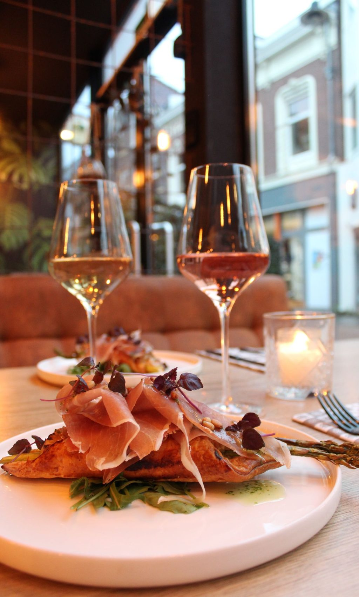
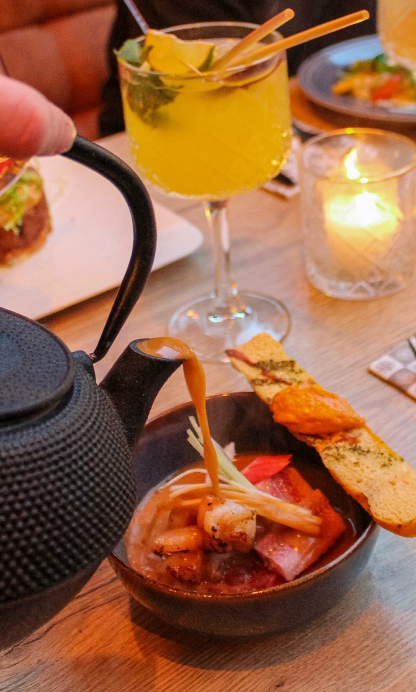
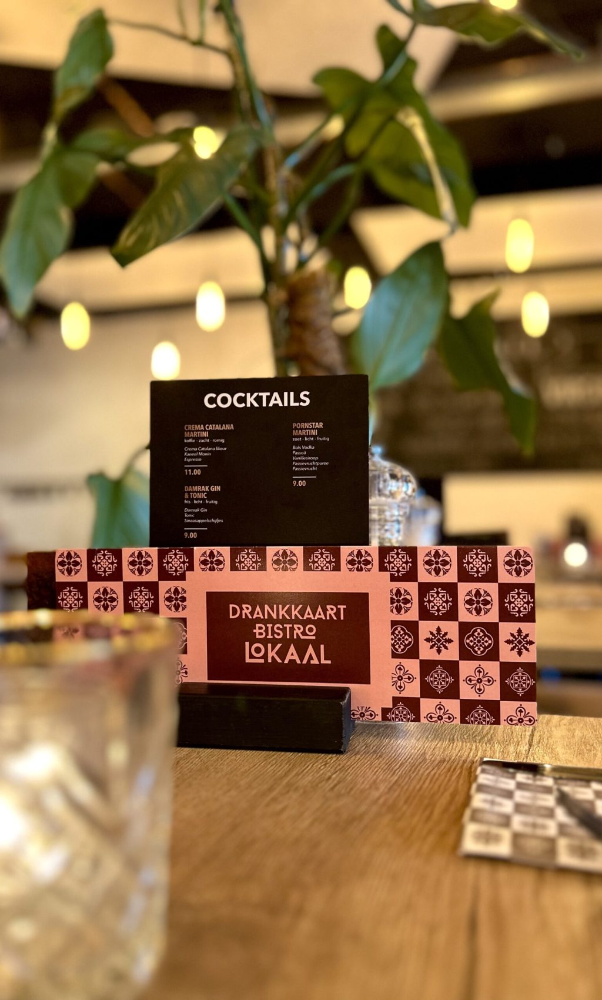

Koffie, lunch of uitgebreid dineren in Woerden
Dinsdag tot en met zaterdag staan we van 10:00 tot 22:00 voor je klaar. Binnenlopen kan via de Voorstraat én de Rijnstraat.


Welkom bij Bistro Lokaal
Het hele jaar staan we dinsdag tot en met zaterdag voor jullie klaar en doen we wat we het allerliefste doen: jullie een onvergetelijke dag verzorgen.
Of je nu een kopje koffie met wat lekkers komt drinken, komt lunchen of uitgebreid komt dineren, wij staan voor je klaar.
Sinds maart 2025 is ons pand weer in ere hersteld. We zijn doorgebroken naar de Rijnstraat en hebben daar nu ook een ingang. Net zoals het vroeger was!
Van welke kant kom jij binnenlopen?
De kaart
Lunch vanaf 11:00, diner vanaf 18:00. Dit is onze winterkaart; de stukken dry aged vlees staan op het bord in de zaak.
Vanaf 11:00vega = is of kan vegetarisch
Soepie
Lunch
Lekker voor erbij
Te bestellen vanaf 18:00
Voorgerechten
Soep
Bijgerecht
Te bestellen vanaf 18:00BGE = Big Green Egg
Hoofdgerechten
Bijgerechten
Dry aged van het bord, voor de grote eters
Je kunt kiezen uit diverse mooie stukken vlees. De chef krijgt een hele rug binnen die hij schoonmaakt en in stukken verdeelt. De stukken zijn voor de echte vleesliefhebbers en grote eters en staan op het bord.
Côte de boeuf delen? Dan raden we aan uit te gaan van minimaal 350 gram per persoon. De prijzen op het bord zijn per 100 gram.
Bij dry aging wordt vlees nog aan het bot voor langere tijd gerijpt. Tijdens het rijpingsproces verdampt het vocht uit het vlees, waardoor het een geconcentreerde smaak krijgt.
Ook wordt het spierweefsel langzaam afgebroken door de van nature aanwezige enzymen in het vlees. Dat maakt dit speciale vlees zo lekker mals.
Hele dag te bestellen* vanaf 18:00
Nagerechten
Port & dessertwijn
Dessertcocktails
Van de cocktailkaart
De complete drankkaart vind je bij ons aan tafel.
Zijn er allergieën? Laat het ons weten! Niet alle ingrediënten staan vermeld op de kaart. · Winterkaart als pdf
Reserveren? We staan je graag persoonlijk te woord
Wil je bij ons komen eten? Laat het even telefonisch weten, dan zetten we een tafel voor je klaar.
0348 702 594Dinsdag t/m zaterdag, 10:00 – 22:00

Openingstijden
| Maandag | gesloten |
| Dinsdag | 10:00 – 22:00 |
| Woensdag | 10:00 – 22:00 |
| Donderdag | 10:00 – 22:00 |
| Vrijdag | 10:00 – 22:00 |
| Zaterdag | 10:00 – 22:00 |
| Zondag | gesloten |
Bistro Lokaal
Voorstraat 12, 3441 CL Woerden
Rijnstraat 11, 3441 BP Woerden